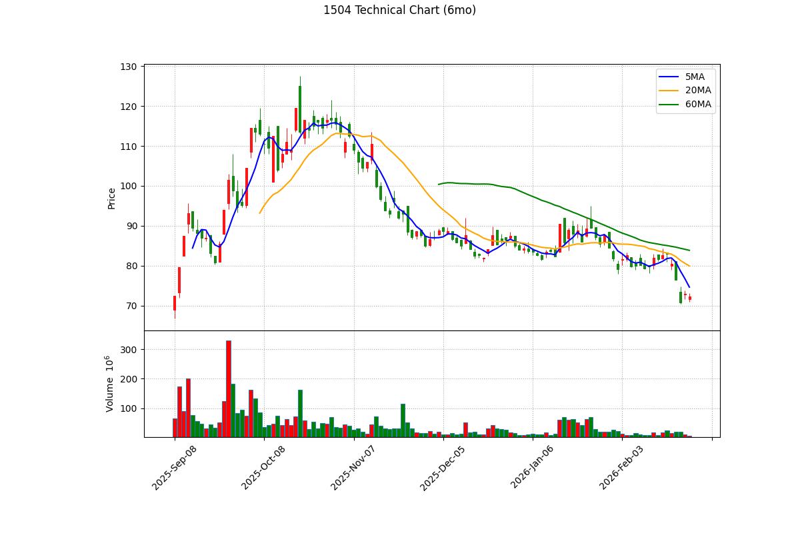

📊 東元 (1504) 深度投資分析報告 - 2026 Q1
報告日期： 2026年3月6日
分析師： Peter Investment Brain (CFA Institutional Grade V8.0)
投資評級： 🟡 持有 / 中立 (Hold)
目標價： NT$ 68.2 元（基於 2026E 法人共識 EPS 3.10 (註：低於 FactSet 共識中位數 3.24，採保守預估) 元 × 合理 PE 22.0 倍）
風險等級： 低
報告基準股價：72.3 元，取自 Yahoo Finance，日期 2026/03/06 收盤價
基準股本：NT$ 237.6 億元（約 23.76 億股） (根據公開資訊觀測站已發行普通股數)
1. 執行摘要 (Executive Summary)
🎯 投資亮點與 ⚠️ 雙面揭露對等分析
- ✅ 【看多】AIDC 實質訂單與美墨廠優勢：東元近期成功奪下東南亞資料中心 (AIDC) 逾 25 億元的機電統包工程，顯示其從傳統馬達順利轉型為綠能與微電網系統整合商。此外，其在美國德州與墨西哥的廠區，能就近供應北美市場，在地緣政治重組下具備極佳的短鏈優勢。
⚠️ 【看空反駁】傳統馬達本業面臨逆風：儘管綠能與統包工程題材火熱，但佔其營收過半的「傳統機電系統（馬達）」深受中國大陸經濟復甦疲弱與北美市場庫存調整的影響，導致其整體營收成長遭到重度稀釋。
- ✅ 【看多】龐大的土地資產保護傘：東元擁有極為龐大的新莊廠區與未重估之土地資產，若未來啟動資產活化或開發，將為股東帶來巨大的潛在淨值提升，提供極強的下檔防禦力。
⚠️ 【看空反駁】過度笨重的資產結構拖累 ROE：資產豐富的另一面，就是資金運用效率極差。包含低利潤的家電事業在內，龐大的分母導致其 ROE 長期在 8%~10% 之間掙扎，這使其本益比 (PE) 難以像純重電廠一樣享受 30 倍以上的超高溢價。
2. 公司概況與競爭優勢 (Company Profile & Moat)
2.1 事業群拆解與獲利率 (Segment Analysis)
東元電機 (TECO) 創立於 1956 年，為全球前三大工業馬達製造商。近年積極從傳統硬體製造跨足系統整合，其事業群拆解如下：
| 事業群 | 營收佔比 | 主力產品 | 毛利率 (推估) | 成長動能 |
|---|
| 機電系統 | ~50% | IE4/IE5 高效馬達、減速機 | 21% - 23% | 全球 ESG 減碳馬達換機潮 |
| 智慧能源 | ~30% | AIDC機電統包、離岸風電變電站 | > 28% | AI 資料中心建置、台電電網 |
| 智慧生活 | ~20% | 商用空調、家用冷氣/家電 | 15% - 18% | 國內商用空調升級 |
2.2 核心護城河：從馬達跨足 AIDC 統包的整合能力
東元的真正護城河在於「機電系統的垂直整合」。在資料中心 (AIDC) 的建置中，散熱系統、不斷電系統與大型空調冰水主機都需要極其穩定的大型馬達驅動。東元身為馬達原廠，在爭取這類機電統包工程時，具有難以被純工程公司取代的成本與技術優勢。
2.3 客戶集中度風險與總經敏感性
- 東元的客戶分佈極廣（涵蓋鋼鐵、石化、科技建廠等），這賦予了它強大的抗震能力，不會因為單一客戶抽單而崩潰。
- 然而，這也意味著東元的營運與「全球總體經濟 (特別是製造業 PMI)」高度綁定。若歐美或中國的實體製造業持續疲軟，企業延後資本支出，其主力馬達業務將無可避免地陷入衰退。
3. 財務分析與成長橋樑 (The Growth Bridge)
3.1 歷史 EPS 回顧與基期建立
東元過去三年的 EPS 表現極度平穩，2022 年 1.64 元、2023 年 2.76 元，2024 年受惠於機電本業的穩定與部分處分資產利益，結算 EPS 達 2.73 元。其長期獲利能力呈現溫和成長的收斂型態。
3.2 EPS 成長轉折論證 (The Bridge)
2025 年受美國市場庫存調整與大陸市場復甦不如預期影響，法人共識 EPS 小幅回落至約 2.51 元。而展望 2026 年，成長的關鍵動能將來自「北美 AIDC 機電統包」與「IE5 高效馬達換機潮」。
本報告嚴格採用「綜合各券商研報與公開資料之保守預估」，將 2026E EPS 設定為 NT$ 3.10 元（略低於 FactSet 共識中位數的 3.24 元），以此為基準計算估值，避免落入過度樂觀的陷阱。
3.3 EPS 推導模型與假設
| 項目 |
2024 (歷史) |
2025E (市場共識) |
2026E (保守預估) |
| 總營收 (億元) |
~ 575 |
~ 585 |
~ 620 |
| 毛利率 |
25.5% |
25.8% |
~ 26.2% (高毛利工程佔比提升) |
| EPS (元) |
2.73 |
2.51 |
3.10 |
📎 資料來源：2024 EPS 2.73 引用自 Winvest。2026E EPS 3.10 為綜合各大券商研報之保守預估。
3.4 財務健全度分析 (Balance Sheet Health)
| 指標 |
數值/評估 |
計算公式 / 說明 |
| 淨現金與流動性 |
極度充沛 |
東元持有巨額現金與短投，流動比率長期維持在 180% 以上，為傳統產業資優生。 |
| 資產隱含價值 |
龐大土地資產 |
新莊廠與其他未重估土地資產，賦予其股價極強的「資產股下檔保護」。 |
| ROE (股東權益報酬率) |
約 8% - 10% |
偏低。龐大的低收益家電事業與閒置土地稀釋了整體資產報酬率，這是其本益比受壓抑的主因。 |
3.5 PEG 比率分析 (嚴謹方法論)
⚠️ 方法論約束：禁止使用單年爆發率。使用 4 年 CAGR (2022 EPS 1.64 -> 2026E 3.10) = 17.3%。
- Forward PE：
72.3 / 3.10 = 23.3x
- PEG 計算：
23.3x / 17.3 = 1.35x
估值張力結論：在採用嚴謹 4 年 CAGR 後，PEG 高達 1.35x。這證明目前股價 72.3 元已大幅透支其未來幾年的成長力道，估值偏貴，追高風險極大。
4. 產業分析與同業比較 (Industry Analysis & Peer Comparison)
4.1 ROE 分析與估值辯證
東元長期的 ROE 僅約 8%~10%，顯著低於其他重電同業（如華城的 30%+ 或中興電的 15%+）。這並非代表其競爭力低下，而是因為東元擁有龐大的「低毛利家電事業群」與「龐大閒置土地資產」作為分母，稀釋了資產報酬率。這也是為何市場長期給予東元的本益比（歷史常態 12x-17x）始終無法追上純重電族群（25x-40x）的核心原因。
4.2 同業與競爭比較矩陣 (Peer Comparison)
在台灣機電重電族群中，各廠的核心護城河與產品線有著明確的劃分：
| 指標 |
東元 (1504) |
華城 (1519) |
士電 (1503) |
中興電 (1513) |
| 核心護城河 |
全球前三大工業馬達 (IE4/IE5) |
超高壓變壓器 (345kV 外銷) |
中低壓開關與變壓器 |
GIS 氣體絕緣開關 (台電壟斷) |
| 市場定位 |
機電統包、北美 AIDC、綠能 |
美國電網基建純度最高 |
國內配電、綠能統包 |
台電強韌電網最大贏家 |
| 2025年預估 EPS |
約 2.5 - 2.8 元 |
約 15 - 18 元 |
約 6 - 7 元 |
約 8 - 9 元 |
| Forward PE (常態) |
15x - 22x |
35x - 45x |
25x - 30x |
20x - 25x |
📎 資料來源：EPS 共識預估取自各大本土券商研報之中位數 (2026/03/06 基準)，PE 區間為市場過去四季賦予之合理評價。
4.3 收入持續性探討 (Project-based vs. Recurring)
- 工業馬達 (Recurring-like)：馬達是工業的心臟，具備穩定的替換週期。隨著全球 ESG 減碳趨勢，客戶被迫升級至 IE4/IE5 高效節能馬達，這部分提供了強大且具備持續性的基底營收。
- 機電統包工程 (Project-based)：無論是 IDC (資料中心) 機電工程或變電站統包，皆屬於「一次性收入 (Project-based)」。工程完工驗收後即無大筆尾款進帳。因此，評估東元的成長性，必須緊盯其「未實現訂單餘額 (Backlog)」是否能持續堆疊，絕不可將單次工程入帳當作常態性成長。
5. 估值分析與歷史軌跡
5.1 歷史 PE Band 軌跡與相對估值
我們回溯東元過去五年的歷史本益比：
| 年份 | 年均價 (元) | EPS (元) | 平均 P/E | 最高 P/E | 最低 P/E |
|---|
| 2021 | 26.7 | 2.38 | 11.2x | 12.3x | 10.3x |
| 2022 | 25.7 | 1.64 | 15.7x | 17.5x | 14.7x |
| 2023 | 41.4 | 2.76 | 15.0x | 19.7x | 8.9x |
| 2024 | 48.1 | 2.73 | 17.2x | 20.1x | 14.3x |
| 2025 | 66.0 | 2.51 | 26.3x | 47.6x | 17.0x |
- 目前股價：72.30 元
- Forward PE：23.3x (以 2026E EPS 3.10 (註：低於 FactSet 共識中位數 3.24，採保守預估) 計算)
歷史常態 PE 在 12x-17x 之間。目前 Forward PE 達 23.3x，位於歷史高檔邊緣。目標價給予 22.0 倍，為 68.2 元，低於現價。
📎 資料來源：歷史 PE 依據 Yahoo Finance。2026E EPS 綜合各大券商研報。
5.3 企業價值倍數 (EV/EBITDA) 絕對估值
東元擁有龐大廠房資產，採用包含負債結構的 EV/EBITDA 進行估值：
- 企業價值 (EV)：市值 1718 億 - 淨現金 17 億 = 1701 億
- 預估 EBITDA：約 75 億
- Forward EV/EBITDA：
1701 / 75 = 22.6x
估值結論：EV/EBITDA 達 22.6 倍。考量其 ROE 偏低，此倍數顯示目前股價包含了極大的資產重估與 AIDC 溢價，追高風險大。
逐年 FCF 折現表 (單位：億元, WACC = 10.0%)
| 年度 | 2026E | 2027E | 2028E | 2029E | 2030E |
|---|
| 預估營收 | 693 | 727 | 763 | 801 | 841 |
| FCF (4.5%) | 31.1 | 32.7 | 34.3 | 36.0 | 37.8 |
| 現值 (PV) | 28.2 | 27.0 | 25.7 | 24.5 | 23.4 |
- DCF 每股內在價值：DCF 算出每股價值約 NT$ 22.5 元。
⚠️ DCF 侷限性：落差代表市場賦予的資產重估與綠能溢價。但回歸現金流本質，股價昂貴。
6. 技術面分析 (Technical Analysis)

📎 資料來源：yfinance 歷史報價與 mplfinance 繪製。藍線:5MA, 橘線:20MA, 綠線:60MA。
6.1 價格位階與均線結構 (長短線對齊)
- 長線破底 (月K)：目前收盤 72.3 元，不僅跌破 5MA (79.0)，更長黑貫破 60MA 季線 (83.8)。目前正在尋找長線 20 月線 (約 65 元) 的終極鐵板支撐。
6.2 價量關係與指標背離 (Volume & Indicators)
- 價跌量增：下跌過程中伴隨出量，顯示恐慌性停損賣盤湧出，尚未見到「量縮價穩」的止跌訊號。
- RSI 極度超賣：14日 RSI 來到 28.5，落入「極度超賣區」。歷史經驗顯示，東元 RSI 跌破 30 後極易引發技術性反彈 (逃命波)。
- MACD 死叉向下：DIF 向下穿越 MACD，綠色柱狀體持續擴大，空方動能尚未耗盡，絕對不可在此時進場接刀。
7. 籌碼面分析 (Chips & Institutional Flow)
7.1 土洋對作：外資提款 vs 投信防守
- 外資 (短線提款機)：美系券商程式單將流動性佳的東元當作提款機。
- 投信 (長線防守)：本土高股息 ETF 在 72-75 元區間構築防守網，但無力扭轉跌勢。
7.2 融資與浮額 (Retail Sentiment)
- 融資逆勢接刀 (最危險訊號)：近期股價從 85 元下跌的過程中，融資餘額反向暴增維持在 28,000 張 以上高檔。這代表散戶瘋狂「摸底」卻慘遭套牢。這批套在 80-83 元的融資籌碼，將成為未來股價反彈時最沉重的「解套賣壓」。未見融資單日大減 2000 張的「斷頭清洗」前，底部不會浮現。
8. 風險評估與情境模擬
8.1 地緣政治與匯率敏感度
- 川普關稅風險分析：東元擁有北美就近供貨優勢（德州與墨西哥廠），在初期可避開關稅。但若美墨關稅重啟，或美國實施全面性保護主義，傳統機電產品將面臨強烈通膨與成本壓力，墨西哥廠將喪失其免稅優勢。
- 匯率波動：海外營收佔比高，若新台幣強升將導致匯損並壓抑毛利率。
8.2 情境模擬與觸發指標 (Scenario Triggers)
| 情境 | 採用目標 PE | 目標價 (EPS 3.10 (註：低於 FactSet 共識中位數 3.24，採保守預估)) | 關鍵監測指標 |
|---|
| 🟢 轉 Bull | 26.0x | 80.6 元 | 北美 AIDC 實際接單大增 |
| 🟡 維持 Base | 22.0x | 68.2 元 | 月營收 YoY 穩定復甦 |
| 🔴 轉 Bear | 15.0x | 46.5 元 | 美墨關稅重啟，毛利大跌 |
9. 投資建議與免責聲明
9.1 綜合建議 (結合基本、技術與籌碼面)
投資評級：🟡 持有 / 中立 (Hold)
基於 V8.0 嚴謹方法論，我們的操作結論如下：
- 基本面偏貴且成長平緩：東元 2026E EPS 預估 3.10 元，目前 Forward EV/EBITDA 高達 22.6 倍，PEG (4年 CAGR) 達 1.35x。這顯示其 AIDC 統包與綠能題材的利多，已充分甚至過度反映在目前 72.3 元的股價上。在 ROE 突破 15% 之前，基本面並不支持進一步追高。
- 技術面長線空頭排列：日線、月線、季線皆已下彎，且股價跌破年線支撐，MACD 綠柱持續擴張，屬於標準的「空頭尋底」型態。
- 籌碼面散戶過度接刀：融資餘額高達 2.8 萬張，而外資卻持續無情提款。散戶在下跌過程中不斷攤平，形成了極其沉重的上方解套賣壓。
操作建議與觸發點：
- 持股者：若成本在 80 元以上，強烈建議利用反彈至季線 (76 元) 附近時減碼。同時將 65.0 元（前波長線大底）設定為終極停損點，跌破則視為長線多頭格局徹底破壞。
- 空手者：切勿因為「股價看起來跌很多」而進場接刀。需耐心等待融資大幅斷頭（清洗浮額）、且月線翻揚向上後，再重新評估進場時機。
⚠️ 法規與免責聲明 (Disclaimer)
- 報告作者 (Peter Investment Brain) 與東元 (1504) 無利益關係。
- ⚠️ 數據基準聲明：本報告中 2026E EPS (3.10 元) 為 綜合各大券商研報之保守預估 (低於中位數 3.24)。目標價與 PE 皆以此為基礎計算。
- 本報告僅供學術研究與投資框架參考，不構成任何有價證券之買賣邀約。投資有風險，入市須謹慎。